ランキングの内容
ランキングの見出し・説明・順位ごとの名称と URL を入力する「ランキングの内容」ボックスの使い方です。
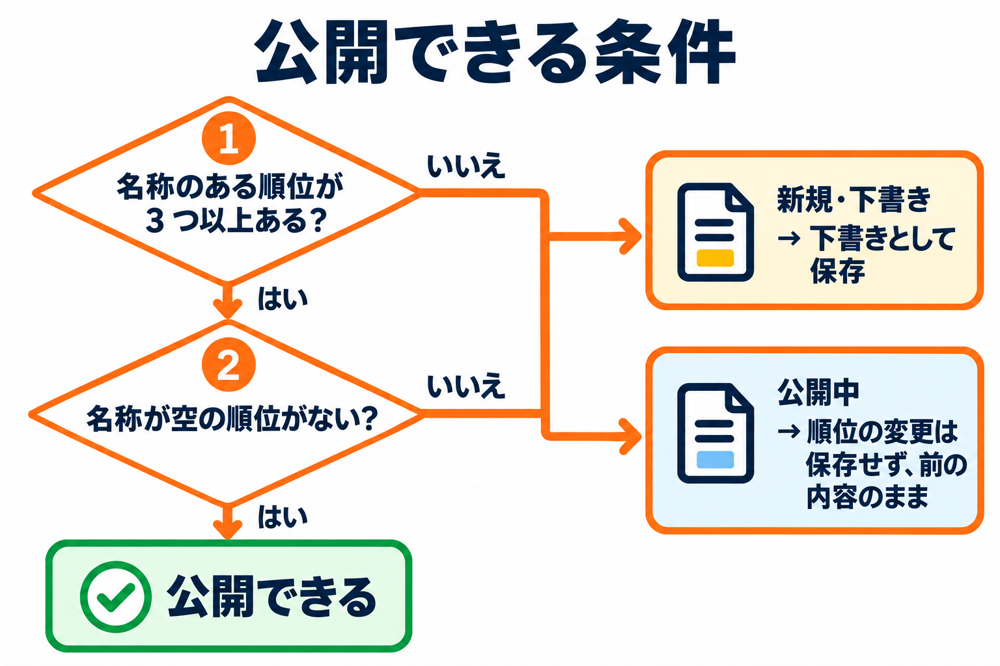
画面の開き方
ランキング一覧の見出しの横にある「ランキングを新規作成」をクリックします。つくったランキングを直すときは、一覧のタイトルをクリックします。
編集画面は、上から次の順に並びます。
| 場所 | 内容 |
|---|---|
| タイトル欄（管理用の名前） | 一覧で見分けるための名前です。 |
| ボックス「ランキングの内容」 | 見出し・見出しの種類・概要説明と、順位ごとの名称・説明・URL を入力します。このページで説明します。 |
| ボックス「デザイン・ボタン・リンク」 | デザイン・ボタン・リンクのページで説明します。 |
| ボックス「構造化データ」 | 構造化データのページで説明します。 |
| ボックス「プレビュー」 | プレビューとショートコードのページで説明します。 |
| 右側の「公開」と「ショートコードと使っているページ」 | 公開・下書きの操作は WordPress の標準の「公開」ボックスです。ショートコードと使っているページは、プレビューとショートコードのページで説明します。 |
管理用の名前
画面の一番上のタイトル欄に入力します。入力欄には「管理用の名前（例：SEOツールのおすすめランキング）」と薄く出ています。
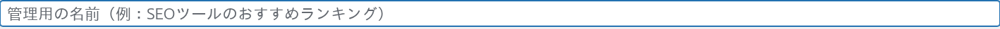
- ランキング一覧や、ページの編集画面のランキングの選択肢に出る名前です。
- ふだんはページに表示されません。ただし、下の「見出し」を空欄にしたときは、この名前が見出しとして表示されます。
ボックス「ランキングの内容」
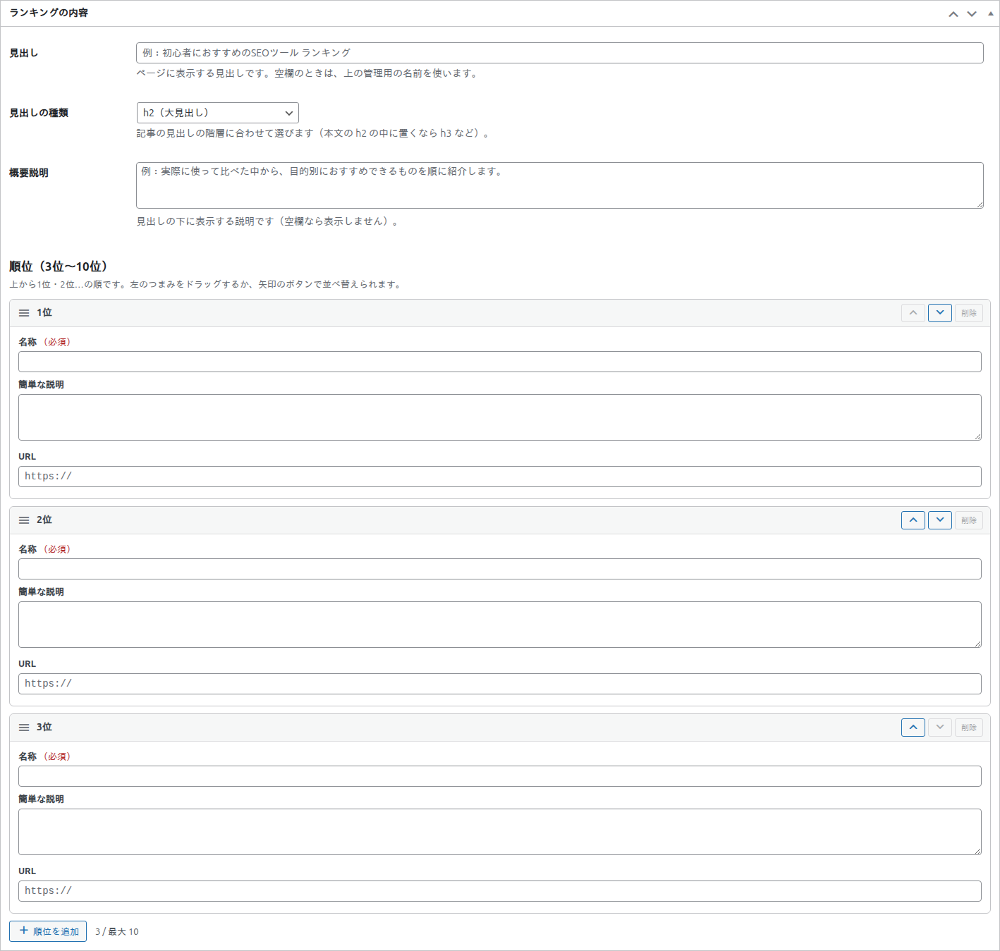
見出し・見出しの種類・概要説明
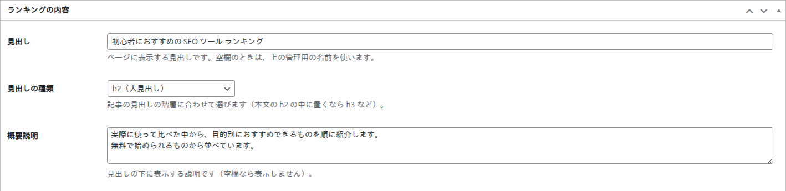
| 項目 | 説明 | 入力できる範囲・既定値 |
|---|---|---|
| 見出し | ページに表示する見出しです。空欄のときは、管理用の名前を使います。例：初心者におすすめの SEO ツール ランキング | 200 文字まで |
| 見出しの種類 | 記事の見出しの階層に合わせて選びます（本文の h2 の中に置くなら h3 など）。 | 既定は「h2（大見出し）」 |
| 概要説明 | 見出しの下に表示する説明です。空欄なら表示しません。改行も使えます。 | 2000 文字まで |
見出しの種類の選択肢と、それぞれの結果は次のとおりです。
| 選択肢 | 結果 |
|---|---|
| h2（大見出し） | 見出しを h2 で表示します。 |
| h3（中見出し） | 見出しを h3 で表示します。 |
| h4（小見出し） | 見出しを h4 で表示します。 |
| 見出しにしない（太字の文字） | 見出しのタグは使わず、太字の文字として表示します。記事の見出しの数を増やしたくないときに選びます。 |
| 見出しを表示しない | 見出しを表示しません（見出しが空欄で管理用の名前を使うときも、表示しません）。 |
見出しは、ランキングの枠の直前に置かれます。目次を自動でつくるプラグインを使っているときも、目次がランキングの枠の中に入り込むことはありません。
順位ごとの入力
順位は、3 位から 10 位までつくれます。1 つの順位に、次の 3 つを入力します。
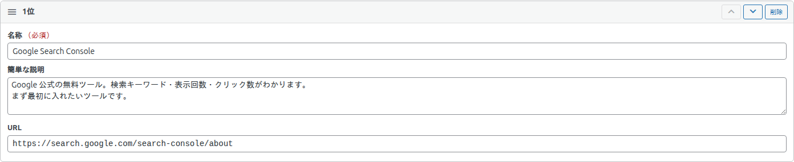
| 項目 | 説明 | 入力できる範囲 |
|---|---|---|
| 名称（必須） | おすすめするもの・サービスの名前です。名称のある順位だけが、ページに表示されます。 | 200 文字まで |
| 簡単な説明 | 名称の下に表示する説明です。空欄なら表示しません。改行も使えます。 | 1000 文字まで |
| URL | 名称のリンクと、ボタンのリンク先です。空欄なら、リンクもボタンも出ません。 | 2048 文字まで。入力欄には「https://」と薄く出ています |
順位の操作
| 操作 | 動き |
|---|---|
| 左の「つまみ」（三本線）をドラッグ | 順位を並べ替えます。並べ替えると、順位の番号（1 位・2 位…）が自動で振り直されます。 |
| 「↑」「↓」のボタン | 1 つ上・1 つ下に動かします。1 位の「↑」と、いちばん下の「↓」は押せません。 |
| 「削除」 | その順位を削除します。順位が 3 つのときは押せません。 |
| 「順位を追加」 | いちばん下に、新しい順位を足します。順位が 10 のときは押せません。 |
| 「N / 最大 10」の表示 | いまの順位の数です。 |
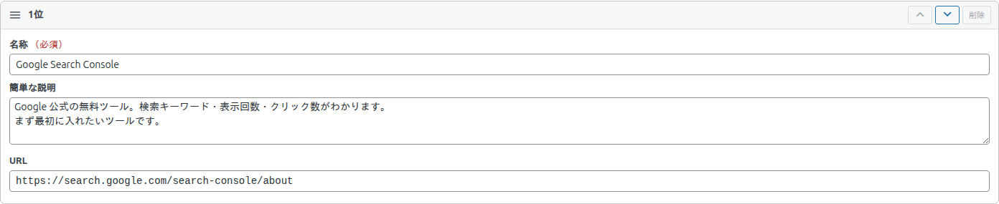
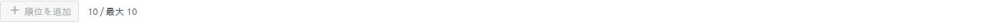
順位が 3 つのときに「削除」を押そうとすると、「順位は 3 つより少なくできません。」と表示されます。
URL の書き方
| 入力 | 保存されるときの動き |
|---|---|
https:// か http:// で始まる URL | そのまま使います。 |
「/」で始まるサイト内のパス（例：/contact/） | このサイトのアドレスを補って使います。 |
| 「//」で始まる URL | https:// か http:// を補って使います。 |
example.com/… のような、始まりを書かない URL | http:// を補って使います。 |
それ以外（javascript: や ftp: など） | 空として扱い、リンクもボタンも出ません。入力中は赤い枠とメッセージで知らせます。 |
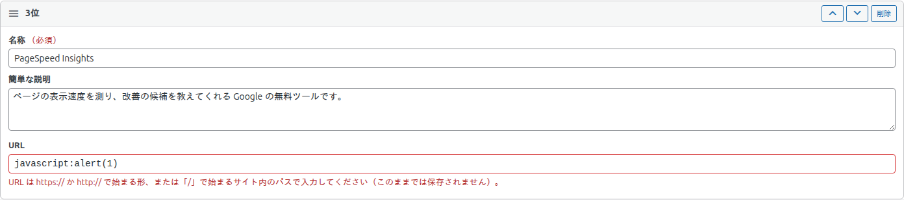
入力した文字は、保存するときに整理されます。HTML のタグは取り除かれ、見えない制御文字も取り除かれます。「10%20代」のような、パーセントと数字の並びはそのまま残ります。
名称・説明・URL のすべてが空の順位は、保存するときに捨てられます。名称が空で、説明か URL だけが入力された順位は「名称が空の順位」になり、公開できません（下の「公開できる条件」を見てください）。
公開できる条件
ランキングを公開（または公開中のランキングを更新）するには、次の 2 つを満たす必要があります。
- 名称のある順位が、3 つ以上あること。
- 名称が空で、説明か URL だけが入力された順位がないこと。
満たしていないときの動きは、ランキングの状態によって違います。
| ランキングの状態 | 動き |
|---|---|
| 新規・下書き | 公開されず、下書きとして保存されます。 |
| 公開中 | 順位の変更は保存されず、前の内容のままです。順位以外の項目（見出し・デザインなど）は保存されます。 |
入力のメッセージ
入力中に出るメッセージ
保存のボタンを押したときに、条件を満たしていないと、順位の下に黄色の枠でメッセージが出ます。
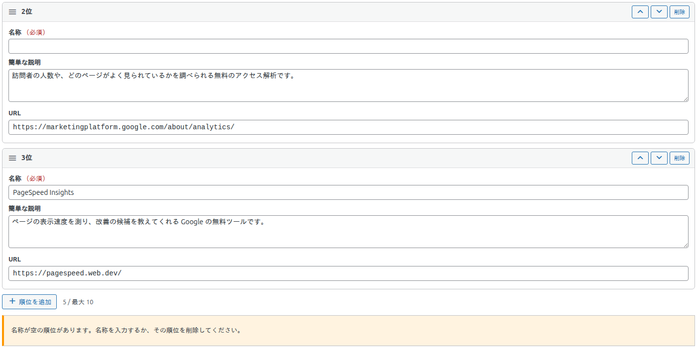
| メッセージ | いつ出るか・対処 |
|---|---|
| 公開するには、3位までの名称を入力してください。 | 名称のある順位が 3 つに足りないとき。名称を入力してください。 |
| 名称が空の順位があります。名称を入力するか、その順位を削除してください。 | 名称が空で、説明か URL がある順位があるとき。 |
| URL は https:// か http:// で始まる形、または「/」で始まるサイト内のパスで入力してください（このままでは保存されません）。 | URL に使えない形を入力したとき。 |
| 順位は 3 つより少なくできません。 | 順位が 3 つのときに「削除」を押したとき。 |
保存したあとに出るメッセージ
公開できる条件を満たさないまま保存したときは、保存後に画面の上にメッセージが出ます。
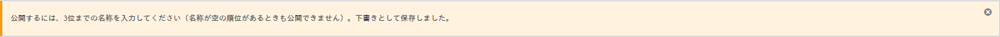
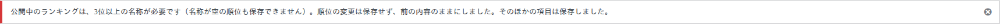
| メッセージ | いつ出るか |
|---|---|
| 公開するには、3位までの名称を入力してください（名称が空の順位があるときも公開できません）。下書きとして保存しました。 | 新規・下書きのランキングで、条件を満たさなかったとき。 |
| 公開中のランキングは、3位以上の名称が必要です（名称が空の順位も保存できません）。順位の変更は保存せず、前の内容のままにしました。そのほかの項目は保存しました。 | 公開中のランキングで、条件を満たさなかったとき。 |
ふだんの保存のメッセージ（「ランキングを公開しました。」など）は、ランキング一覧のページにまとめています。
公開する・下書きにする
右側の「公開」ボックスは、WordPress の標準のものです（画面はプレビューとショートコードのページにあります）。
- 公開：ランキングが、使っているページに表示されます。
- 下書き保存：ページには表示されません。書きかけのまま置いておけます。
- 公開の日時を未来にすると、公開の予約になります。
- 公開中のランキングを更新すると、そのランキングを使っているすべてのページの表示が、新しい内容に変わります。